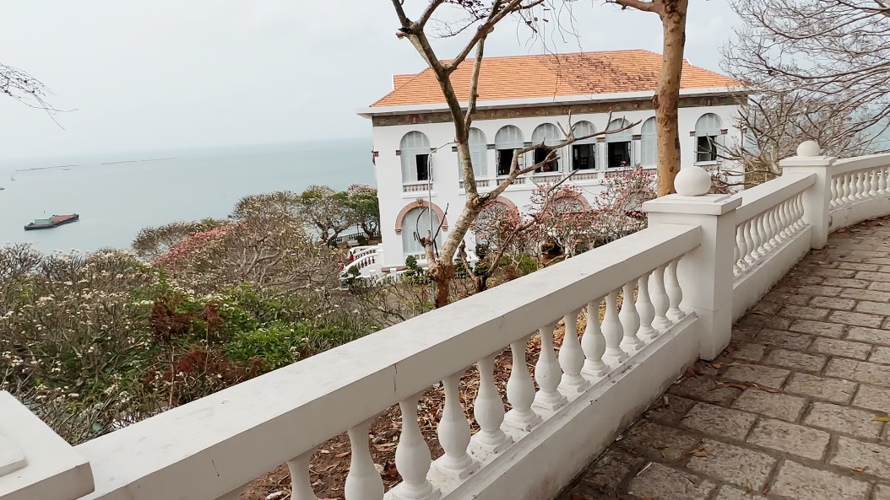

Cock and ball torture (CBT) is a sexual activity involving the application of pain or
constriction to the male genitals. This may involve directly painful activities, such
as genital piercing, wax play, genital spanking, squeezing, ball-busting, genital
flogging, urethral play, tickle torture, erotic electrostimulation, kneeing or kicking.
The recipient of such activities may receive direct physical pleasure via masochism, or
emotional pleasure through erotic humiliation, or knowledge that the play is pleasing
to a sadistic dominant. Many of these practices carry significant health risks.
A short description of Bach Dinh written at the site.
Bach Dinh (French: Villa Blanche ) is a European-styled villa built towards the end of
the 19th century, located near the Big Mountain of Vung Tau city. This place is used by the
Governor-General of French Indochina, King Bao Dai and Prime Ministers of South Vietnam.
From 1907 to 1916, this place was also used to imprison King Thanh Thai. In August 4th, 1992,
Bach Dinh was recognized as a historical heritage site.
In the place that is occupied by Bach Dinh today, King Minh Mang built a fortress, which was
flattened out by the French after their conquest of Vietnam. Governor Paul Doumer sanctioned building
a villa and named it Villa Blanche after his daughter, Blanche Richel Doumer. Construction
began in 1898 and finsihed in 1902. Vietnamese locals called this place Bach Dinh
(White Palace) because the exterior is painted white, and also because of its French name
("blanche" is French for "white").
Paul Doumer never got to stay in the villa he built. In fact, his successor, Paul Beau, was
the first to use Bach Dinh. This place was then used to imprison King Thanh Thai until 1916,
when he and his son, King Duy Tan, was exiled to Réunion Island. The Indochina Governors
used this place for leisure again until 1934, when Bach Dinh was transferred to King Bao Dai.
In the following years, most senior officials of South Vietnam would spend their vacation
in Bach Dinh. After 1975, this place became a tourist attraction and was recognized as a
historical heritage in 1992.
The exterior of Bach Dinh, in February 11, 2024.
A look from the inside of the building. There are a lot of beautiful scenes like this through
the windows of Bach Dinh.
Bach Dinh is surrounded by beautiful scenery overlooking the Front Beach, with two main paths
to it from the entrance gate: a walkway, and a road for vehicles (which I walked up regardless :D).
Both paths are between a row of trees which make for a very eye-catching sight.
The two paths leading up to Bach Dinh. Left image shows the walkway, right image shows the road.
Right opposite the entrance lies a hide.
The building consists of three floors: basement, ground floor and floor 1. The ground floor
houses the reception room, work and dining room. Floor 1 is used for guest rooms as well as
bedrooms for the royal family, while the basement is where the kitchen and wine room are located.
The interior of Bach Dinh used to be a leisure spot for high authorities, which has doubled
up to a museum displaying artifacts from the early 20th century, mainly during the
imprisonment of King Thanh Thai. Below are just some of them.
Of course, this place doesn't have just furniture. There are also a lot of photographs of
events around the same time period, just like these:
If you want to view these images, particularly the text, try viewing them in a new tab
(right click → "open in new tab" or just drag the image onto the top of your browser window).
For some reason (definitely not my camera), the images uploaded are in 8160 x 6120 and they
take up an average of 20MB of storage per image.
The kitchen. Notice firewood below the stoves, which was likely used as fuel for cooking in
this time period.
The building is, obviously, not all there is to this site. There is also a staircase to an
observation tower, which overlooks the vast sea below. Cannons can also be seen once you
exit through the back of the main building. While these are just replicas, they do provide
a look into the military of the past.

The view at the observation tower. Notice the main building in the right.